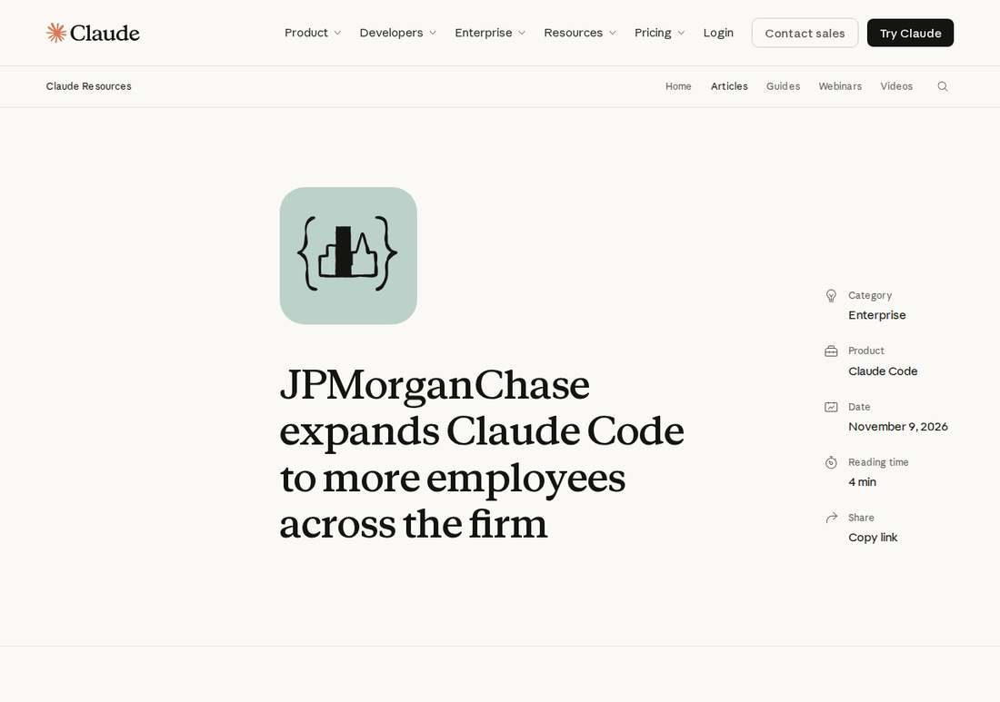

JPMorganChase Takes Claude Code Firm-Wide, Beyond Engineering
JPMorganChase is rolling out Claude across the firm to more employees beyond engineers, Anthropic announced on November 9, 2026: Claude Code now reaches product teams, infrastructure and operations, risk and controls, and Asset and Wealth Management, running inside the bank's Devspace containerized platform with staged access, model-by-model approval, and a hard pass-or-halt gate on every change.

- 01THE ROLLOUT — Anthropic announced on November 9, 2026 that JPMorganChase is rolling out Claude across the firm to more employees beyond engineers, extending from software engineering into product, infrastructure, risk, and wealth management.
- 02THE CONTROLS — Claude Code runs inside Devspace, the bank's containerized development platform on its own infrastructure, with staged access, model-by-model approval, and thousands of automated tests plus a hard pass-or-halt gate on every change.
- 03THE WATCHPOINT — Whether the expansion holds inside its own controls, whether other banks follow JPMorgan's expand-and-govern pattern or Goldman's ration-and-limit one, and whether the JPMorgan-OpenAI partnership Brockman described gets a formal announcement with terms.
WHAT HAPPENEDWhat Happened
JPMorganChase is rolling out Claude across the firm to more employees beyond engineers, Anthropic announced on November 9, 2026. In the Commercial and Investment Bank, work moves into production faster and the freed capacity is redeployed against business priorities. Teams are modernizing legacy systems, and engineers are building their own agents, including pull request review and self-healing agents, and sharing what works.
Infrastructure and operations teams use Claude Code for monitoring, alerting, and root-cause analysis. The firm's security team uses Anthropic's frontier models to find and fix vulnerabilities faster, work Anthropic first described in Project Glasswing, its defensive-security consortium. Product teams turn requirements directly into engineering backlogs, and other teams use Claude Code for risk and controls assessments and program planning.
In Asset and Wealth Management, JPMorganChase is putting the people with the deepest business insight alongside technology and product specialists in small, empowered teams to build customized client investment solutions at scale, with Claude Code now part of their engineering workflow. Last month, J.P. Morgan Asset Management announced a connector bringing 55ip's ActiveTax Technology into Claude for Financial Advisors, putting tax-aware portfolio transition analysis into advisors' daily work.
The deployment is built for a regulated firm. Claude Code runs in controlled environments, including Devspace, the firm's containerized development platform, on its own infrastructure, so agents get no direct access to employee credentials or internal systems. Access widens in stages, and each new Claude model goes through the firm's own approval process before employees can use it. Thousands of automated tests and approval gates check every change, and an automated gate returns a hard pass or halt that the pipeline enforces, so Claude cannot sign off on its own work and people stay accountable for every production change.
WHY IT MATTERSThe opposite direction from Goldman Sachs
The JPMorgan rollout lands a week after Goldman Sachs moved the other way. Bloomberg reported that Goldman limited Claude Code and GitHub tools to its 12,000 engineers, cutting off bankers and traders who had been using the tools to monitor trading flows and produce written and graphic content, citing data security, confidentiality, and protection of proprietary information. JPMorgan is now the counter-example: same regulatory pressure, same confidentiality risk, opposite answer, expand the tools beyond engineering and wrap them in controls instead of rationing them.
The controls are the story as much as the expansion. Devspace isolates the agent from credentials and internal systems, staged access keeps new models behind the bank's own approval, and the hard pass-or-halt gate means no change ships on Claude's say-so alone. Anthropic says JPMorgan's demands are shaping what it builds for other regulated institutions, which is the point: if the largest US bank can run coding agents inside its controls, the control pattern becomes a product in itself, and every other bank's security objection has a working reference to answer.
WHY IT MATTERSOne bank, two labs
JPMorgan now works with both frontier labs on security and coding. OpenAI president Greg Brockman said on stage at WSJ Tech on November 4 that OpenAI has signed a partnership with JPMorgan that had not been previously announced, under which the bank will use Codex and OpenAI's cyber models, and that enterprise is now over half of OpenAI's revenue. No press announcement or terms followed, so the partnership rests on Brockman's word alone, but the direction is consistent: the bank is a launch partner in Anthropic's Project Glasswing and now, by Brockman's account, uses OpenAI's models across the company too.
For Anthropic the JPMorgan expansion is a flagship customer proof point days before its planned IPO. Over the past year the bank's use of Claude grew from software engineering to cyber defense to advisor tools, and Anthropic frames that arc as its template for regulated industries. The watchpoint is whether the expansion survives its own controls: staged access and model-by-model approval mean the rollout's pace is set by the bank's risk team, not by Anthropic's release calendar, and any incident inside Devspace would be read as a verdict on the whole pattern.
SIGNAL JUDGMENT — ANALYSISJPMorgan is the counter-example to Goldman's rationing, and its controls are the product
Tokenta Signal's judgment: the expansion matters less as a headcount story than as a governance answer. Goldman Sachs limited the same tools to its engineers a week earlier, citing confidentiality; JPMorgan is expanding them past engineering and betting that Devspace isolation, staged access, and a hard pass-or-halt gate make the risk manageable. If the rollout holds, JPMorgan's control pattern becomes Anthropic's sales pitch to every other regulated institution, and the bank's dual-lab posture, Glasswing with Anthropic and Codex with OpenAI by Brockman's account, shows the largest US bank is no longer choosing a lab but buying leverage over both. The test is operational, not rhetorical: the pace is set by the bank's risk team, and one incident inside Devspace would be read as a verdict on the pattern itself.
WHAT REMAINS UNCERTAINWhat Remains Uncertain
EVIDENCEEvidence

Anthropic's article 'JPMorganChase expands Claude Code to more employees', published November 9, 2026 and read in full: JPMorganChase is rolling out Claude across the firm to more employees beyond engineers. In the Commercial and Investment Bank, work moves into production faster and capacity is redeployed against business priorities. Infrastructure and operations teams use Claude Code for monitoring, alerting, and root-cause analysis; the security team uses Anthropic's frontier models to find and fix vulnerabilities faster, work first described in Project Glasswing. Product teams turn requirements into engineering backlogs and use Claude Code for risk and controls assessments. In Asset and Wealth Management, small empowered teams build customized client investment solutions at scale with Claude Code in their engineering workflow. Last month, J.P. Morgan Asset Management announced a connector bringing 55ip's ActiveTax Technology into Claude for Financial Advisors. Claude Code runs in Devspace, the firm's containerized development platform, on its own infrastructure, with staged access and model-by-model approval; thousands of automated tests and approval gates check every change, and an automated gate returns a hard pass or halt so Claude cannot sign off on its own work. Unite.AI's same-day report confirms the firm-wide rollout beyond engineering teams.
PRIMARY SOURCESPrimary Sources
- Anthropic: JPMorganChase expands Claude Code to more employees
https://claude.com/resources/articles/jpmorganchase-expands-claude-code - Unite.AI: JPMorganChase Broadens Claude Code Use Beyond Engineering Teams
https://www.unite.ai/jpmorganchase-broadens-claude-code-use-beyond-engineering-teams/